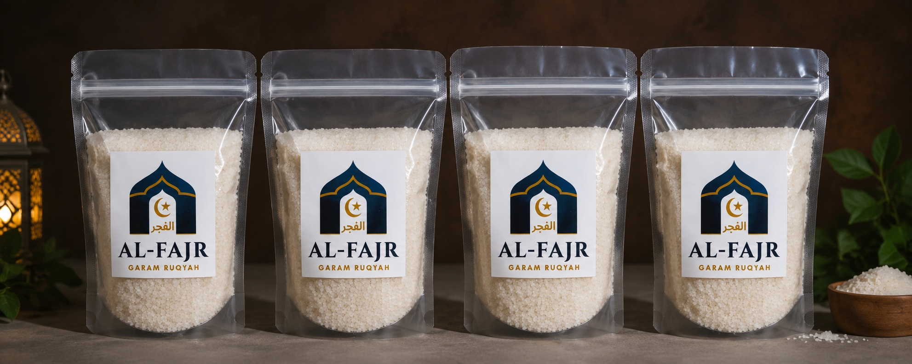
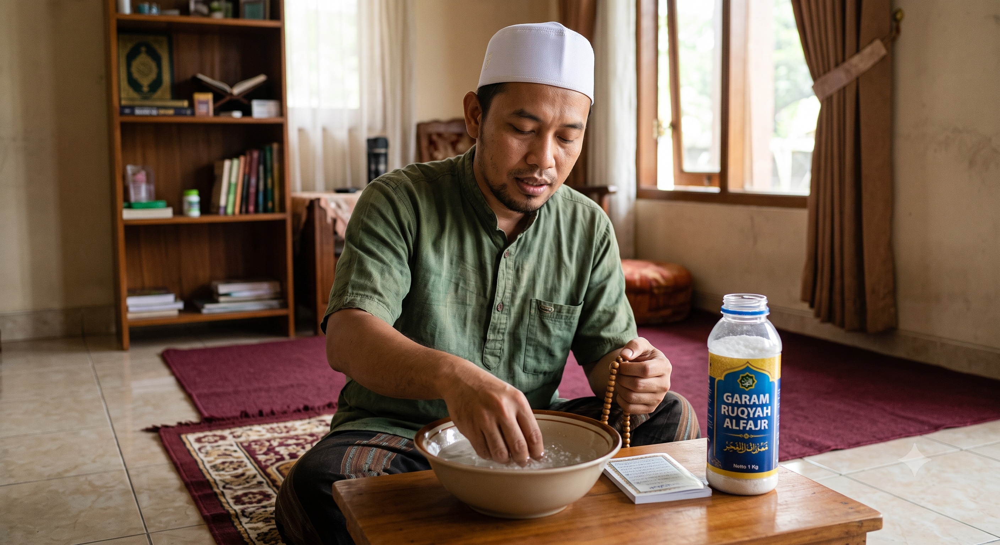

Garam Ruqyah Al-Fajr diformulasikan dari garam laut murni yang telah dibacakan ayat-ayat suci Al-Qur'an dan doa-doa ma'tsur. Ikhtiar terbaik untuk perlindungan keluarga.

"Sebaik-baik pengobatan adalah dengan Al-Qur'an."
Terbukti
Melindungi
Terbuat dari garam laut kristal murni tanpa campuran bahan kimia berbahaya.
Telah dibacakan ayat-ayat Al-Baqarah dan doa perlindungan sesuai sunnah.
Dapat digunakan untuk mandi, merendam kaki, hingga mengepel lantai rumah.
Garam ruqyah Al-Fajr diformulasikan khusus sebagai wasilah (perantara) untuk mengatasi berbagai keluhan medis maupun non-medis.
Membantu menetralisir energi negatif akibat pandangan mata yang hasad (iri) atau kagum berlebihan.
Sangat baik untuk mengepel lantai guna mengusir gangguan jin dan hawa panas/tidak nyaman di rumah.
Merendam kaki dengan air hangat campuran garam ini dapat memberikan efek rileks yang dalam sehingga mudah tidur.
Kandungan mineral alami membantu meredakan gatal-gatal, alergi, dan masalah kulit yang tidak kunjung sembuh.

Campurkan 3 sendok makan Garam Ruqyah ke dalam 1 ember air biasa/hangat. Gunakan air ini pada bilasan terakhir saat mandi sore. Niatkan di dalam hati untuk membuang penyakit dan energi negatif.
Larutkan 2-3 sendok makan ke dalam seember air pel. Mulailah mengepel dari area dalam rumah menuju ke arah pintu keluar rumah sambil membaca Bismillah.
Ambil sejumput garam, taburkan tipis-tipis di sudut-sudut ruangan, ambang pintu, atau jendela yang dirasa sering ada gangguan (seperti bau anyir atau hawa panas).
Pilih paket yang sesuai dengan kebutuhan ikhtiar Anda hari ini.
Cocok untuk percobaan awal
Paling ideal untuk rutinitas
Untuk dijual kembali / stok
Silakan isi formulir di bawah ini. Setelah ditekan "Kirim", akan otomatis masuk ke WhatsApp Admin kami.
"Awalnya sering susah tidur dan anak rewel tiap malam. Setelah coba dipel rumahnya dan buat campuran mandi anak pakai garam ini, alhamdulillah tidurnya jadi pulas."
"Saya punya alergi kulit yang sering gatal tiba-tiba. Ikhtiar rendam air garam ruqyah Al-Fajr ini rutin 3 hari, bi'idznillah gatalnya jauh berkurang dan kulit lebih nyaman."
"Toko sembako saya akhir-akhir ini sepi & hawanya panas, sering ribut. Setelah ditabur garam ini di pojok toko, alhamdulillah hawa toko lebih adem."
*Hasil dapat berbeda pada setiap orang. Kesembuhan mutlak milik Allah SWT.